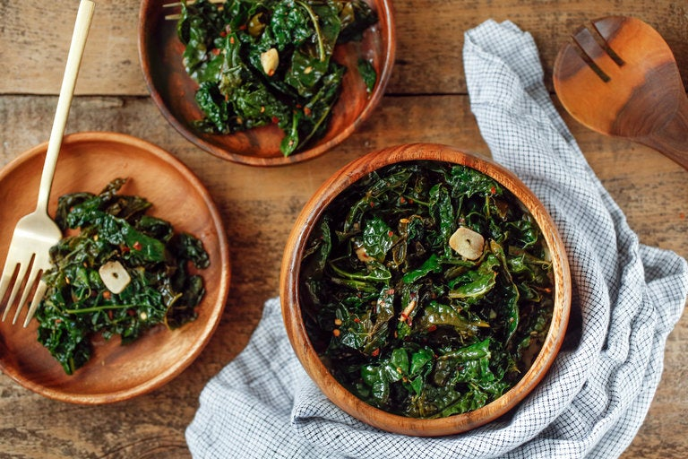

Miso Kale

This is a recipe I made for Miso Kale!
Ingredients
- 1 bunch of kale (dinosaur kale works best, but any will do)
- Red Miso paste
- Minced garlic
- Red Pepper
- Olive oil
Steps
- Remove kale leaves from stems. Chop up and set aside.
- In a skillet, heat on a medium heat. While the pan heats up, pour some olive oil on the kale and massage your kale (trust me).
- In a small pot, mix in your water and red miso paste. Stir until it dissolves.
- Do a dry sautee on your kale for a minute, then add a little more olive oil.
- Add some of your miso to the kale, as well as the red pepper flakes and garlic.
- Cook for 5 more minutes.
- Let cool.